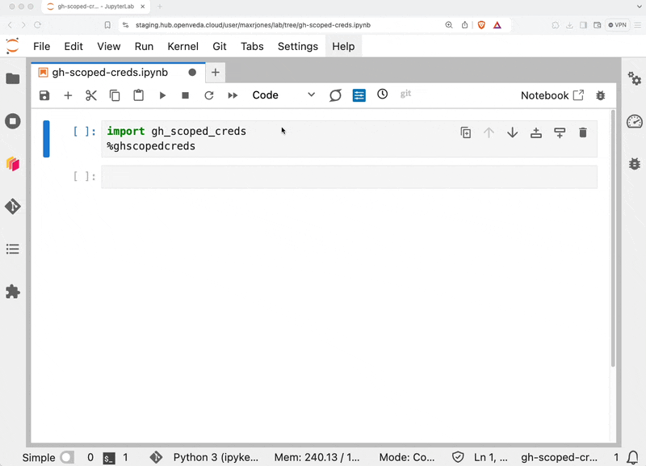

How to push to GitHub from the VEDA JupyterHub
This is a quick how-to guide for pushing to GitHub from the VEDA JupyterHub. There are several methods for GitHub Authentication, which are detailed in GitHub’s documentation. While some of those are applicable across all compute environments (e.g., personal access tokens), we recommend using gh-scoped-creds as a fine tuned GitHub authenticatin method designed for shared computing environments like HPCs and JupyterHubs.
User authentication via veda-hub-github-scoped-creds app
Copy notebook for running gh-scoped-creds
Copy the /home/jovyan/veda-docs/notebooks/templates/template-github-auth.ipynb notebook to your personal home directory on the Hub as github-auth.ipynb.
You only need to do this step once.
Authenticate to GitHub
You need to do this step each time you start a new JupyterHub instance.
This will only allow pushing to repositories that have been configured with the veda-hub-github-scoped-creds-app. While gh-scoped-creds is the recommend method for authenticating on VEDA, you can fallback on personal access tokens if necessary, while taking precautions to not store long-lived tokens directly on the Hub to avoid leaked credentials.
These steps are also shown in the GIF below.
- Open the
github-auth.ipynbin your home directory. - Run the cell that contains
import gh_scoped_credsfollowed by%ghscopedcreds. - Copy the code that was displayed in the cell output.
- Navigate to https://github.com/login/device/select_account.
- Select the account that you want to authorize push access for.
- Enter the code from the cell output in the Jupyter Notebook.
- Select
Authorize veda-hub-github-scoped-creds.
Now, you’re all set! You should be able to push to the repositories that you configured in the first portion, as long as you’re using the https rather than ssh protocol. You can set this up by selecting https when cloning the repository, or using git remote set-url to change from ssh to https.

Repository admin configuration of the veda-hub-github-scoped-creds app
Repository admins need to configure the veda-hub-github-scoped-creds app to allow users to push from the JupyterHub.
- Navigate to https://github.com/apps/veda-hub-github-scoped-creds.
- Select
Configure. - Select the organization that contains the repository that you would like to push to.
- Select either
All repositoriesorOnly select repositoriesdepending on whether you only want to allow pushing to specific repositories. In order for a Hub user to write to those repositories, the repository needs to be added to the application and the user needs to have read/write permissions for the repository. The following restrictions define whether you can install the application yourself or if you need to request permission:- Organization owners can install GitHub Apps for all repositories.
- Repository admins can install the application if they only grant access to repositories that they administer.
- If you do not have sufficient permissions, GitHub will send a notification to the organization owner requesting that they install the app.
- Click save.